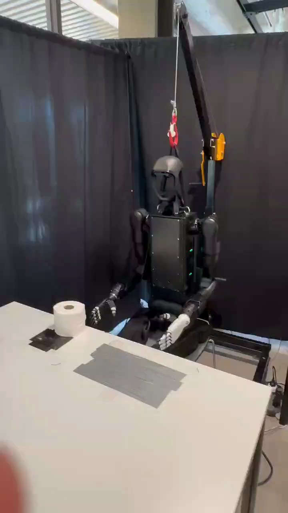

Humanoid Everyday · human-robot-2__hand_over_toilet_paper
Hand over toilet paper

Visual review action_review.json
{
"prompt_protocol": "humanoid_action_v1",
"prompt_provenance": "visually_authored_from_video_and_initial_frame",
"reviewed_contact_sheets": [
"sheet_001.jpg",
"sheet_002.jpg",
"sheet_003.jpg",
"sheet_004.jpg"
],
"inspected_frame_stride": 2,
"inspected_sampled_frame_count": 224,
"initial_scene": "Front three-quarter view of humanoid seated or supported behind a table, both articulated hands near the lap/table edge. A single upright white toilet-paper roll stands near the right hand on a small dark tabletop patch. Its cylindrical body and central cardboard core are visible in the source initial PNG.",
"observed_sequence": [
{
"start_frame": 0,
"end_frame": 37,
"action": "Robot holds the initial pose; upright paper roll remains on table, both hands clear of it.",
"confidence": "high"
},
{
"start_frame": 38,
"end_frame": 95,
"action": "Anatomical right arm raises and reaches outward toward the upright roll; hand opens above and beside the roll. Anatomical left hand stays by the lap.",
"confidence": "high"
},
{
"start_frame": 96,
"end_frame": 159,
"action": "Right hand descends to the roll, with thumb entering the visible core region and fingers alongside the outer wall; roll remains on the tabletop.",
"confidence": "high"
},
{
"start_frame": 160,
"end_frame": 225,
"action": "Right hand closes around the roll, holding near the core and outer surface; contact is established before lifting.",
"confidence": "high"
},
{
"start_frame": 226,
"end_frame": 293,
"action": "Right hand tips the roll from upright to sideways and lifts it clear of the dark patch, raising it forward of the torso with the circular core facing toward the viewer.",
"confidence": "high"
},
{
"start_frame": 294,
"end_frame": 331,
"action": "A person reaches in from image left with an open palm underneath the held roll. Robot keeps the roll aloft and then begins lowering it toward the waiting hand.",
"confidence": "high"
},
{
"start_frame": 332,
"end_frame": 371,
"action": "Robot lowers roll into the human palm. Person wraps fingers around its exterior while robot retains contact; brief shared support precedes release.",
"confidence": "high"
},
{
"start_frame": 372,
"end_frame": 391,
"action": "Robot right hand opens clear of the roll and human carries the now solely human-held roll toward image left, leaving the frame.",
"confidence": "high"
},
{
"start_frame": 392,
"end_frame": 446,
"action": "Empty right arm retracts and lowers toward lap. Final frame shows neither robot hand holding an object and no roll on the original tabletop spot.",
"confidence": "high"
}
],
"arm_hand_roles": {
"right": "Sole robot manipulating hand: reaches, grasps roll near its central core/exterior, tilts and lifts, presents and lowers into human palm, retains hold until the human grasps, releases and retracts.",
"left": "Remains near lap with minor passive pose variation, does not grasp or support roll or contact person.",
"person": "One visible hand approaches palm upward from image left, supports bottom/exterior of roll, wraps around it during shared hold, and withdraws carrying it after robot release."
},
"anatomical_side_evidence": {
"confidence": "high",
"evidence": "The source initial PNG shows the robot front face and chest panel directed toward the camera. The manipulating black hand is continuously attached via forearm and upper arm to the shoulder on the robot body right (image left). The white idle hand traces to the opposite shoulder (robot left, image right). Naming derives from front-facing body/shoulder attachment, not image position alone.",
"uncertainty": "None for robot anatomical sides; person body is outside view so human anatomical hand side is not assigned."
},
"coordination": "Single robot-hand manipulation followed by robot-to-person transfer: the robot supports the roll until the person has placed a palm underneath and closed a grasp, then opens its fingers; no robot hand-to-hand transfer or bimanual support occurs.",
"terminal_state": "Successful robot-to-person transfer is visibly complete. Person has carried roll out of frame at image left; original tabletop location is empty, and robot right hand is empty and retracted toward lap.",
"selected_execution_status": "success",
"uncertainties": [
"Precise individual digit force/contact on the hidden side of the roll is not visible; gross grasp, lift and release are clear. Human anatomical hand side cannot be established from the visible forearm/hand alone and is not specified."
],
"annotation_discrepancies": [],
"evidence_frame_indices": [
0,
96,
160,
220,
252,
290,
332,
350,
370,
384,
392,
446
],
"inspection_coverage": {
"full_sequence": "All four contact sheets visually reviewed in order, covering every second decoded frame from 0 through 446.",
"sample_count": 224,
"native_source_initial_png_viewed": true,
"native_transition_and_final_frames_viewed": [
96,
160,
220,
252,
290,
332,
350,
370,
384,
392,
446
],
"native_dimensions": [
720,
1280
]
},
"source_annotation_assessment": "Original toilet-paper pickup and person-handover instruction matches the visible complete transfer. Gentle handling is qualitative and not treated as a separate observable outcome.",
"video_id": "human-robot-2",
"dataset": "Humanoid_Everyday",
"dedicated_review_agent": "review_he_human_robot_2",
"review_source_video": "Humanoid_Everyday/human-robot-2__hand_over_toilet_paper/third_person/original/original.mp4",
"source_frame_count": 447,
"source_fps": 29.933035714285715,
"native_detail_frames": [
96,
160,
220,
252,
290,
332,
350,
370,
384,
392,
446
],
"world_model_prompt": "The humanoid robot grasps the toilet-paper roll on the tabletop with its right hand, lifts it, and turns it sideways for handover. It lowers the roll into a person's outstretched palm and keeps holding it while the person closes their hand around it. The robot opens its right hand to release the roll, then retracts its empty arm as the person carries the roll away. Keep the camera fixed; preserve robot geometry, physically valid joint motion, and normal gripper opening and closing.",
"original_task_instruction": "Picking up toilet paper and handing it to a person, requiring gentle handling and appropriate handover positioning for easy human grasp.",
"selected_segment": {
"start_frame": 0,
"end_frame_exclusive": 447,
"reason": "Complete original single-task reference; no cropping or trimming requested."
},
"source_video_sha256": "b0f81e79371126724200a3441b8f86caaff54cf71e744c0c55f3f7cdb818d739",
"review_completed_at": "2026-10-13T17:22:29.301588+00:00"
}